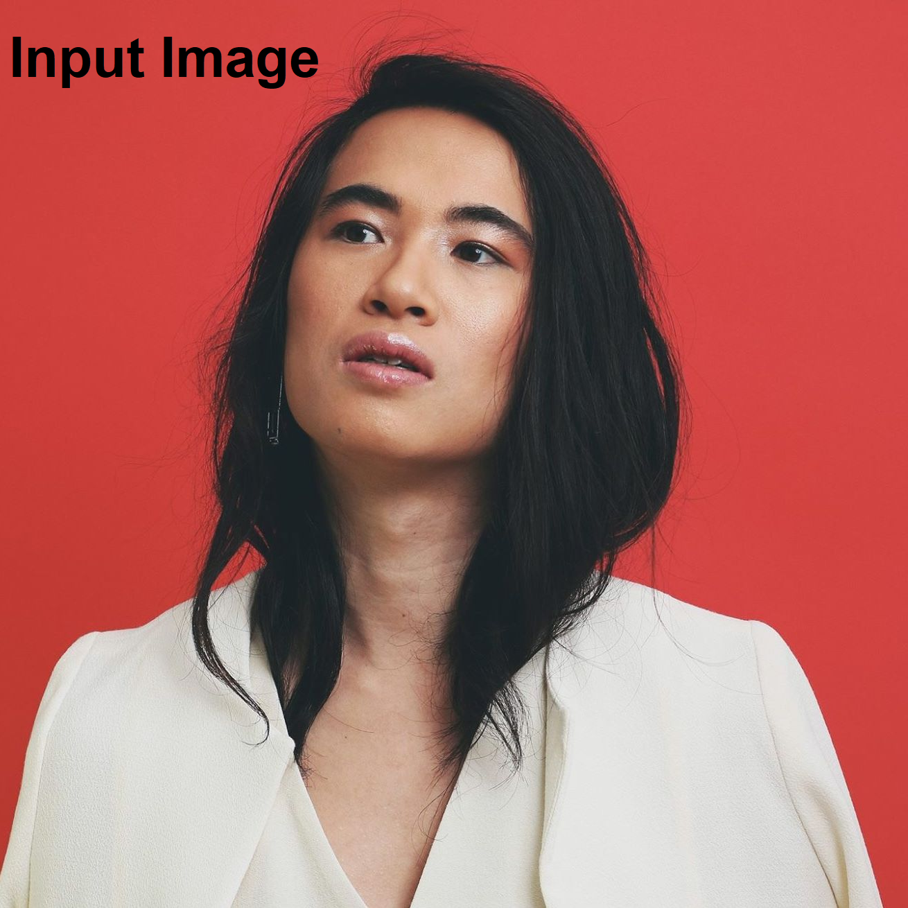
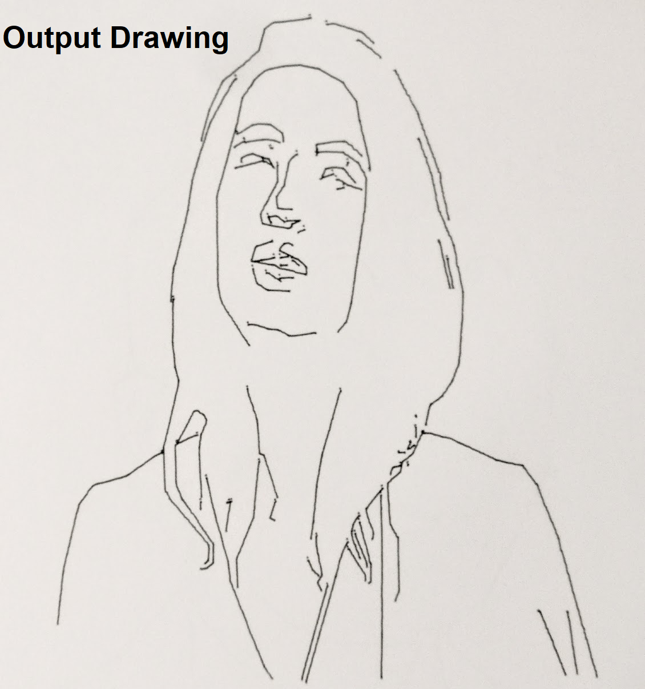

Mobile-Controlled Plotter
Hardware Prototyping
 Go to portfolio.
Go to portfolio. 
Capstone Design Project
As part of a 3-month capstone design project, I worked with a team to develop a vector graphics plotter. Plotters were common for large-scale drafting through the 1980s, and there is also a thriving community of artists (#plottertwitter) who use them for creative purposes . We wanted to design a system that integrated the affordances of the plotter with modern mobile devices and image processing techniques.
The system comprised three parts:
- A front-end Android application that allowed users to take photographs and sketch drawings, as well as manage their library of images.
- A set of image processing algorithms that converted input images into a series of pen stroke instructions that were then transmitted to the plotter using Bluetooth Low Energy (BLE).
- A plotter that converted these low-level instructions to a physical drawing. This comprised a circuitry subsystem and microcontroller (mounted on custom PCBs) that received BLE instructions and drove a set of stepper motors, as well as the actual physical system that used the motors to control the pen position.
I was responsible for construction of the physical system, as well as high-level integration and project planning. Starting from an existing, open-source design for a 3D plotter, I replaced as many parts as possible with alternatives that could be laser-cut or 3D-printed, to maximize the ability of makers to recreate or modify the design using standard tools. This was a great opportunity to learn about CAD tools like Solidworks, and methods for rapid prototyping and fabrication.
This project was an extraordinary amount of fun. Though the device we built was not particularly novel, it was exciting to take on and coordinate a project with so many separate subsystems, and to finally have it work all the way from input image to output drawing.
Our team competed in a “Dragon’s Den” style pitch competition with executives from Orbis Investment Management, where we won second place (and a $1000 prize) for our design and associated business model.
Contributions: Concept, Implementation (Mechanical Design), Report Writing. I completed this project with four other (extremely talented) students, to whom I owe a great deal: Behzad Abghari, Esther Roorda, Alan Daniels and Pak Ki Lam.